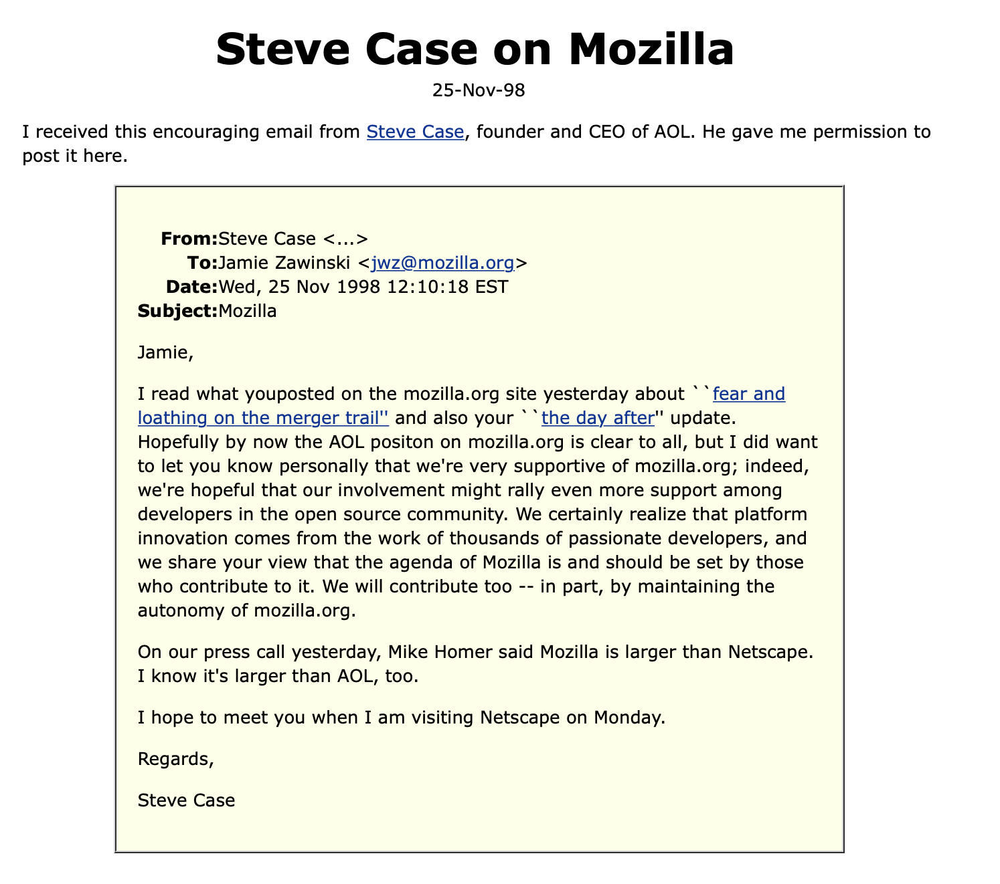

It all started with the Mozilla Project back in 1998. The release of the Netscape browser suite source code was intended to harness the creative power of thousands of programmers on the internet and fuel unprecedented levels of innovation in the browser market.
Within the first year, new community members from around the world had already contributed new functionality, enhanced existing features and became engaged in the management and planning of the project itself. Having a community made Mozilla larger than its parent company.
An email from Steve Case, founder and CEO of AOL
On June the 5th, 2002 the first version of Mozilla was released. The goal of the community was to provide the best possible experience on the Internet to the widest possible group of people. Back in 2002, 90% of the browser market was taken by Internet Explorer.
To support the new browser and to improve its functionality as well as promote openness, innovation and opportunity on the internet, on 15th of July 2003 the Mozilla Project created the Mozilla Foundation, an independent non-profit organization supported by individual donors and a variety of companies.
On November 9th, 2004, the Firefox 1.0 was released– the first browser from The Mozilla Foundation. It was a multiplatform and multilingual browser, that had a huge success, with over 100 millions downloads in 11 month, thanks to these features:
- Pop-Up blocking
- Online fraud protection
- Integrated into toolbar search (Google, Yahoo, eBay, Amazon and more)
- Simultaneous loading of different pages inside one window
- More than a hundred browser extentions on day one
- Build-in tools for migration from other browsers
On August 3, 2005, the Mozilla Foundation announced the creation of Mozilla Corporation, described as "a taxable subsidiary that serves the non-profit, public benefit goals of its parent, the Mozilla Foundation, and that will be responsible for product development, marketing and distribution of Mozilla products". It also handles relationships with businesses, many of which generate income.
Unlike the Mozilla Foundation, the Mozilla Corporation is a tax-paying entity, which gives it much greater freedom in the revenue and business activities it can pursue. The Mozilla Foundation is funded by donations and 2% of annual net revenues from the Mozilla Corporation.
The Mozilla Foundation controls 100% of all shares of Mozilla Corporation and all profits is invested back into the Foundation. Stocks aren't floating on the stock market. The company mostly exists to make it easier to work with the money, since there're no limits on spending and acquiring your profits, as long as you're paying taxes.
Of course we as web-developers are mostly interested in MDN Web Docs (prev. Mozilla Developer Network)– a documentation repository about web standars and Mozilla own projects.
Launched back in 2005 by Mozilla, it is now being maintained not only by them, but also by Google, Microsoft and Samsung. On January 25 2021, the Open Web Docs (OWD) organization was launched as a non-profit fiscal entity to collect funds for MDN development. As of March 2022, the top financial contributors of OWD are Microsoft, Google, Facebook, Coil, and Igalia.
Also there's a subscription called MDN Plus, that allows developer to recieve alerts about updates in standars, build and deploy his own libraries and have entire MDN's library offline.
Surely with joint efforts of such companies and some monetization, the future of web development is looking bright.
Currently the Mozilla Foundation is working on seven new projects:
-
Project Things
a collection of software components for IoT devices -
Firefox Reality
the internet in VR -
Firefox Listen
a voice-powered internet, so people could listen to content instead of reading it -
Common Voice
a community project to make virtual assistants sound more human-like -
Hubs by Mozilla
a VR space for meetings -
WebXR Viewer
mixed reality on the web -
Spoke by Mozilla
app that helps to create 3D models on the web